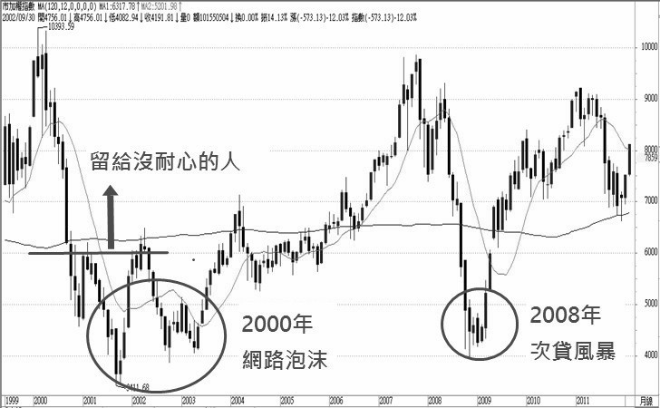
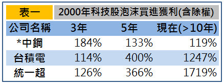
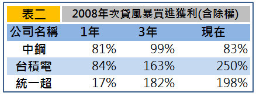

今天我們要來思考為什麼一次的股災入市可以抵過十次的波段獲利。
「如果一個人的耐心程度將計算到個人財富裡，那麼有些人早已破產。」 –富朋友
我因為進入股市投資的時間早，所以跟同年齡的人比起來，我的股齡顯得操老許多。 好在這種操老是偏向愈老愈有價值，所以有時別人聽到我的投資年齡後，都會主動跟我討論 想進一步了解投資獲利的「秘訣」。其中我常被問到的是：「你都怎麼在股市賺到錢的？」
答：「我很會等！」
這四字箴言是我每次都想脫口而出的第一句話，簡短又能突顯我的核心觀念。 只是若我真的這樣回答，應該就四海之內皆無朋友了吧！藏私、暗槓、冷漠、愛耍神祕 可能是我在別人心中的印象。所以為了友誼，通常我都會說明一些投資心態，偶爾加些圖表 來增加說明的力道，以及進場時要注意的指標。 但說實在，最重要還是四個字：「要耐心等。」
懂得等待，一次投資抵過別人十次 股市本來就是個動盪的市場，金融危機或突發事件（SARS、兩顆子彈…）層出不窮，所以 每隔幾年股票市場就會來個大跳水，不過攤開歷史數據及股市線圖，近十年嚴格定義 危機重創股市的還是這兩件跟美國有直接關聯的事：2000年的科技股泡沫與2008年的次貸風暴。 以下圖表可以清楚看到這兩事件當時從高點掉落的慘況及事後報酬回升的可觀。


*中鋼2000年的統計，因多年除息後手上股票已零成本，
無法計算報酬率，改以未除權息來計算報酬。
實際獲利應大於表中非常多。

註：表一與表二的報酬計算買入與賣出皆以平均價位來計算，實際報酬會因個人而不同。
表一的數據可知在2000年股災期間買進台積電與統一超是件非常明智的事，持有約11到12年
台積電包含除權息共獲利12倍，統一超更達17倍！年化報酬分別為25.8%及29.5%，
這種績效只用口說一定很多人不相信。別人投資十年每年都要維持超過25%的年報酬才追得上來，
而你只要在那段時間投資那麼一次，這十年晚上就都睡得很安穩。至於中鋼目前或許讓人
覺得獲利不可觀，不過其實也打敗很多當時的熱門股，而且它的股價穩定度更高，
這是一般人沒有看見的隱性優勢。
時間再往後推6到8年就是表二次貸風暴到目前的獲利情況，若那段期間買進持有到目前 約四年，年化報酬率則分別為16.3%、25.8%、18.6%，我預期再過幾年報酬率也將 愈來愈另人「瞠目結舌」，直叫人「侮不當初」。
做好準備等股災來
通常當股市大跌時，電視媒體就會有人大喊此時要危機入市，不過那時反而要小心這些言論
是為了拉抬股市，特別是如果這段話出自投顧分析師，因為那時沒人投資股票他們也就
不用幹老本行了，極力做多一直是他們的「專業」。反觀現在股市看似正在走多頭，
而且不時有傳聞將上看九千、萬點，大家的焦點都被轉移到如何選到飆股，如何換股操作，
所以我現在把這樣的觀念強調出來，就是要提醒自己還有版上朋友懂得預先為下一波
便宜買進時機做準備。不然如果股災再度出現時，你手上要現金沒有現金，要投資但本金
又被套在其他地方，或是平常根本沒做好這筆投資金的規劃，那麼這樣的投資機會對你而言
將又只是另一則金融危機的新聞播報而已。
這篇文章的最主要概念想我不需再多解釋，就跟我開頭寫的那四個字一樣簡短清楚，
要點還是在當機會來時，你有多少的能力能保握到。至於當股災來時該投資哪些股票，
就要靠平時多做功課，不過除非你想要在那時獲得超額報酬（相對超額的風險），
不然市場上許多大家耳熱能詳的股票或是單靠台灣50，就已經能提供你不錯的養老金。
至於大家可能更關心的問題：下一次股災什麼時候會來呢？這就只有神才能知道， 不過我會確定在那之前我已先做好準備，然後眼睛放亮等待股災的再度來臨。